Programación de Aplicaciones Telemáticas
Tema 5: Javascript
Agenda
- Introducción
- Core Language
- Javascript & Web Browser
- Formularios Web
- Referencias
Sesión 1: Javascript Core
Introducción
- JavaScript (JS) es un lenguaje de programación ligero, interpretado, o compilado justo-a-tiempo (just-in-time)
- Es más conocido como un lenguaje de scripting
- JavaScript es un lenguaje de programación basada en prototipos
- Utilizado no solo en Navegadores Web (Por ejemplo NodeJS)
Introducción
- No confundir JavaScript con el lenguaje de programación Java
- Ambos lenguajes de programación tienen sintaxis, semántica y usos muy diferentes
- Multiparadigma, de un solo hilo, dinámico, con soporte para programación orientada a objetos, imperativa y declarativa (por ejemplo programación funcional)
Core Language
- Incorporar JS en nuestra Web
- ¿Para qué sirve?
- Ejecutar código Javascript
- Tipos
- Sintaxis
- Documentación
Incorporar JS en nuestra Web
Incorporar JS en nuestra Web
Incorporar JS en nuestra Web
¿Para qué sirve?
- Interactividad a nuestra Web
- Acceder a información en Internet (APIs)
- Organizar y presentar datos
Ejecutar código Javascript
HTML
document.write(" Esto es un parrafo
");
Ejecutar código Javascript
Reaccionar a eventos
Ejecutar código Javascript
Modificar contenido HTML
x=document.getElementById("demo");
x.innerHTML="Hello!";
Ejecutar código Javascript
Validar información
if isNaN(x) {alert("Error!")};
Ejecutar código Javascript
Resumen
- Mostrar información (Alert)
- Cambiar información HTML (write)
- Elementos HTML (innerHTML)
- Consola del Navegador (console.log)
Tipos
- Primitivos
- Objectos
- Arrays
- Funciones
Tipos (Primitivos)
const booleano = true && !false || true;
const numero = 10 + 2 * 2 / 4 - 1;
const cadena = 'Cadena con \' (comilla simple escapada)';
const cadenaConVariables = `Núm:${numero}, Booleano:${booleano}, Cadena:'${cadena}'`;
// Comentario: ¡pinta por consola para depurar!
console.log(cadenaConVariables);
Tipos (Objectos)
const objeto = {
campoNumero: 1.5,
campoBooleano: false,
campoObjeto: {
campoCadena: 'Cadena',
campoArray: [],
otroObjeto: {}
}
};
objeto.campoNumero += 2.5;
console.log('Campo modificado:', objeto['campoNumero']);
console.log('Campo anidado:', objeto.campoObjeto.campoCadena);
console.log('Contenido de todo el objeto:', objeto);
Tipos (Array)
const array = [1.2, true, {campo: 'a'}, [1, 2]];
array[0] = '1er elemento modificado';
array.push('elemento nuevo añadido al final');
console.log('Longitud del array:', array.length);
console.log('Contenido de todo el array:', array);
Tipos (Funciones)
- function: Declara una función con los parámetros especificados
- function*: Los generadores de funciones permiten escribir iteradores con mas facilidad
- async function: Declara una función asíncrona con los parámetros especificados
Tipos (Funciones)
- return: Especifica el valor a ser retornado por una función
Tipos (Funciones)
const suma = function suma(param1, param2) {
return param1 + param2;
};
console.log(suma(1, 2));
Sintaxis
- Variables
- Condicionales
- Igualdad
- Bucles
- Excepciones
Sintaxis (Variables)
Variables son contenedores que almacenan valores (Objetos)
- var
- let
- const
Sintaxis (Variables)
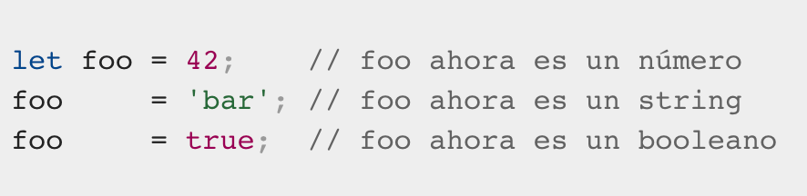Sintaxis (Condicionales)
const condicion1 = false;
const condicion2 = true;
if (condicion1 && condicion2) {
console.log('Entro por if');
} else if (condicion1 || !condicion2) {
console.log('Entro por else if');
} else {
console.log('Entro por else');
}
Sintaxis (Condicionales)
const condicion = true;
const resultado = condicion ? 1 : 2;
Sintaxis (Comparadores)
const array = ['a'];
console.log(1 === 1);
console.log('cadena' === 'cadena');
console.log(array === array);
console.log(array !== ['a']);
console.log('1' !== 1);
console.log(true !== 1);
console.log(false !== 0);
Sintaxis (Comparadores)
const array = ['a'];
console.log('1' == 1);
console.log(true == 1);
console.log(false == 0);
console.log(array != ['a']);
Sintaxis (Interaciones)
- do...while: Crea un bucle que ejecuta una instrucción especificada hasta que la condición de prueba se evalúa como falsa. La instrucción especificada se ejecute al menos una vez
- for: Crea un bucle que consiste en 3 parametros opciones, seguido del bloque a ejecutar en cada iteración
- for each...in: Itera una variable especificada sobre todos los valores de las propiedades del objeto
Sintaxis (Interaciones)
- for...in: Itera sobre las propiedades enumerables de un objeto, en orden albitrario. Para cada propiedad distinta, las instrucciones pueden ser ejecutadas
- for...of: Ejecuta un bloque de código para cada elemento de un objeto iterable, como lo son: String, Array
- while: Crea un bucle que ejecuta la instrucción especificada siempre que la condición de prueba se evalúe como verdadera. La condición se evalúa antes de ejecutar la instrucción
Sintaxis (Excepciones)
const suma = function suma(a, b) {
const resultado = a + b;
if (!resultado && resultado !== 0) {
throw 'Parámetros incorrectos';
}
return resultado;
}
Sintaxis (Excepciones)
const jsonAobjecto = function jsonAobjecto(json) {
try {
return JSON.parse(json);
} catch(error) {
console.log('Se ha producido al convertir de JSON ➜ objeto JS:', error);
}
}
Documentación
https://developer.mozilla.org/es/docs/Web/JavaScript
Sesión 2: Javascript & Web Browser
Javascript & Web Browser
- The Window Object
- Handling Events
- Scripted HTTP
- Client-Side Storage
- HTML5 APIs
The Window Object (BOM & DOM)
- Modelo de objetos que nos permite interactuar con el navegador y sus elementos
- Soportado por todos los navegadores
- Tenemos acceso a todos sus elementos y funciones
BOM (Browser Object Model)
- Redimensionar ventanas del navegador
- Obtener información del navegador (ventana actual): propiedades, dimensión, histórico, URL actual...
- Gestión de cookies
- Acceder al DOM
- Funciones con temporizador:
setTimeout(function(){}, timeoutMillis)ysetInterval(function(){}, intervalMillis)
Ejemplos
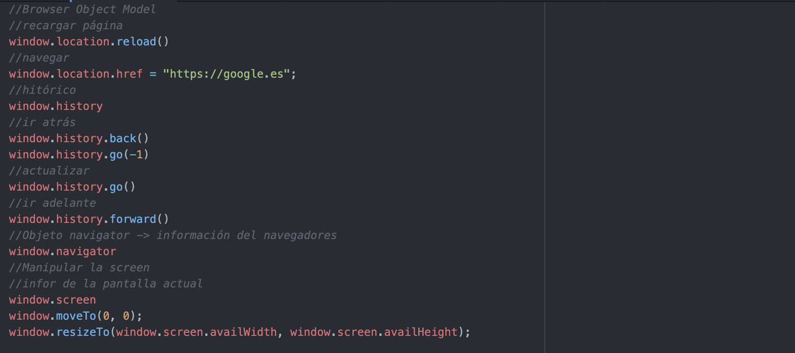DOM (Document Object Model)
- API para documentos HTML y XML
- Estándar del W3C
- Reprentación estructurada de los elementos del documento Web: elements HTML y nodes
- Permite la comunicación de JavaScript con el document Web
Acceso a elementos específicos
getElementById()getElementsByName()getElementsByTagName()getElementsByClassName()
Acceso a elementos específicos
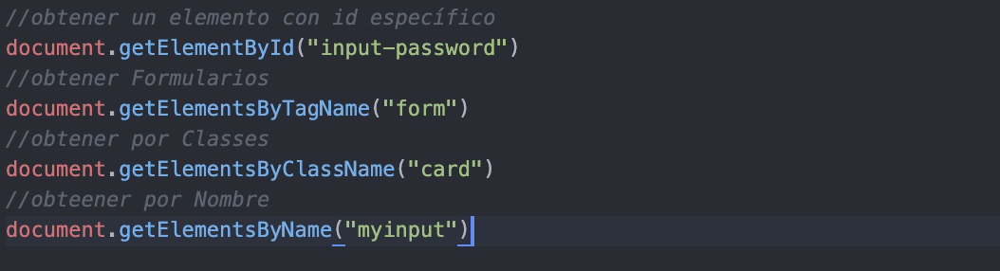Creación de elementos y nodos
createElement(tag, options)createComment(comment)createText(text)cloneDeep()
Creación de elementos y nodos
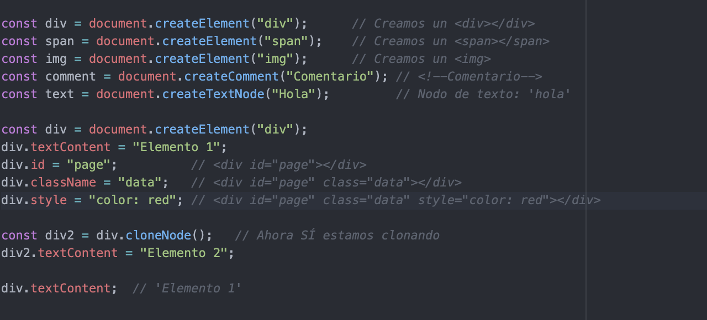Insertar elementos
innerHTML, outerHTMLinnerText, outerTextappendChild(element)insertAdjacentElement(position,element),insertAdjacentHTML(), insertAdjacentText()remove(),removeChild(node), replaceChild(new, old)
Insertar elementos
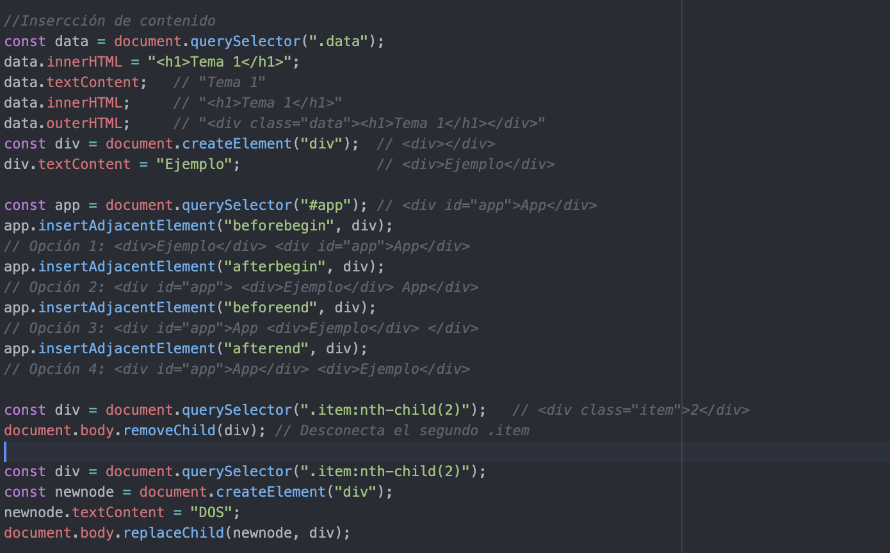Manipular clases CSS
className, getAttribute("class"), setAttribute("class", class)classList
Insertar elementos
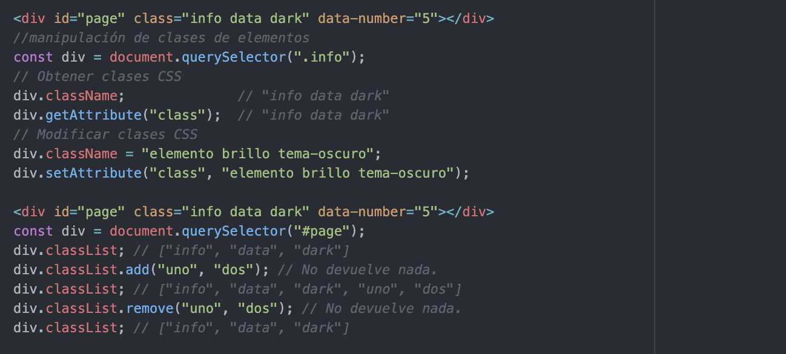Handling Events
- Programación JavaScript reactiva basada en eventos
- Se capturan los diferentes tipos de eventos en la página a través de
Event Listeners/Handlers - Estos listeners reciben el evento y realizan una acción
- Un Handler/Listener por cada tipo de evento
Handling Events
Tipos de eventos
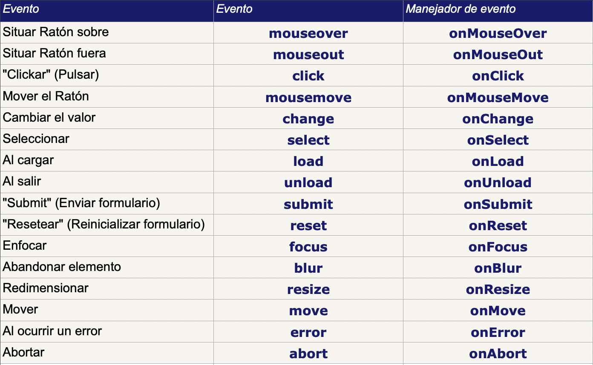Referencia a todos los eventos
Handling Events
Registro de Handlers
Varias formas de registrar un Handler para un evento:
- A través de propiedad HTML: p.e.
<button onclick="doSomething()"> - A través del DOM estableciendo el atributo HTML:
document.getElementById("btn").onclick=doSomething - A través del DOM haciendo uso de
addEventListener(enventType,function(){})yremoveEventListener(enventType,function(){})
Handling Events
Objeto Event
Cuando se desencadena un evento, en el Handler recibimos el objeto Evento asociado. A través de la propiedad target podemos acceder al elemento del DOM donde se produjo el evento
Handling Events
Evitar el comportamiento por defecto
Cuando hacemos un submit de un formulario, podemos romper el flujo y evitar el envío del mismo
Para ello utilizamos la función preventDefault() y en algunos casos, return false
Ejemplo búsqueda de películas con eventos
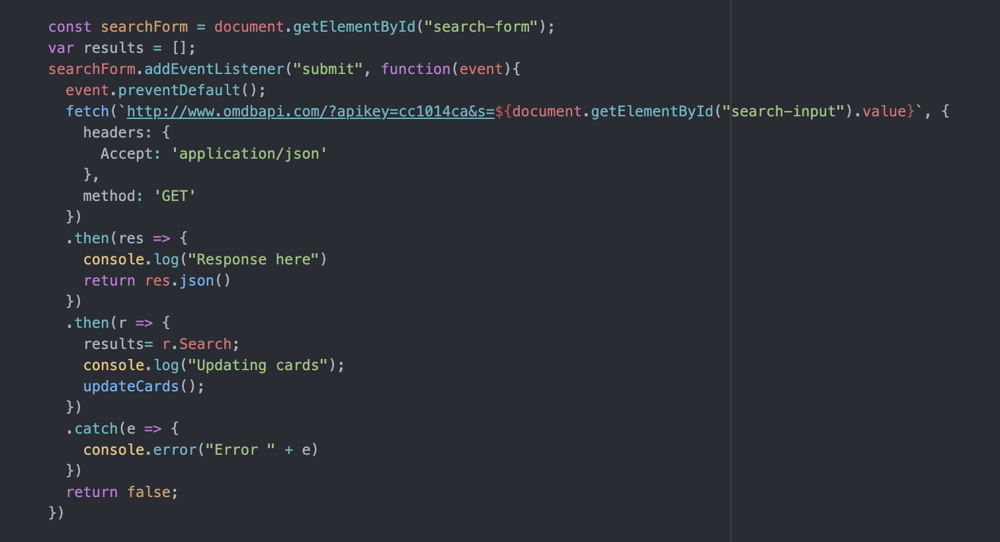Scripted HTTP
Consiste en la realización de peticiones HTTP a través de JavaScript
- A través del atributo
locationdelWindow Object - A través de la función
submit()para enviar formularios - A través de AJAX
Ejemplos Scripted HTTP
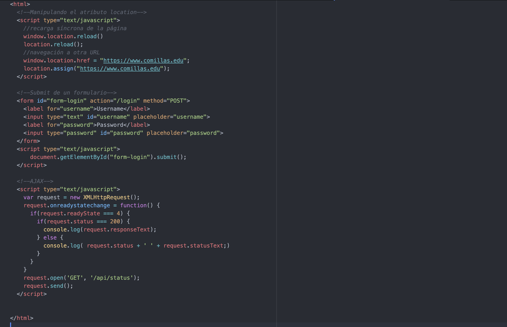Client-Side Storage
Consiste en almacenar datos simples o complejos en la memoria del navegador para:
- Mejorar la experiencia de usuario, p.e. guardar preferencias, colores, gustos...
- Almacenar datos de la sesión anterior, p.e. cesta de compra
- Almacenar recursos/datos para que la carga de la página sea mucho más eficiente
- Almacenar recursos/datos para poder utilizar el modo sin conexión
Client-Side Storage
- Cookies
- Web Storage: local & session
- IndexedDB
Cookies
- Es la forma clásica de almacenar datos sobre sesión de usuario, preferencias, etc.
- Se almacenan en formato clave=valor
- Se crean en servidor con la cabecera
Set-Cookie: <nombre-cookie>=<valor-cookie> - Se pueden crear con JavaScript a través del atributo
cookiedelDOM - Asociadas a un dominio y un path, y se envían en todas las request contra ese dominio/path en la cabecera Cookie
Cookies: atributos
- Expires y Max-Age: sirven para establecer la caducidad de la cookie. Si no se establece, será una cookie de sesión
- HttpOnly y Secure: sirven para evitar el acceso a la misma a través de JavaScript, y para solo enviarla en caso de ser una conexión HTTPS respectivamente 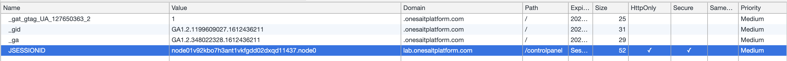
Cookies: ejemplos
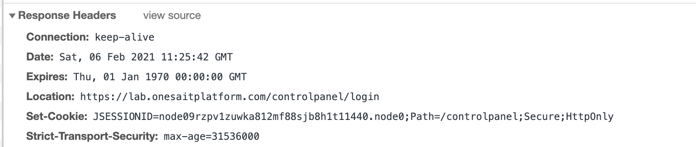 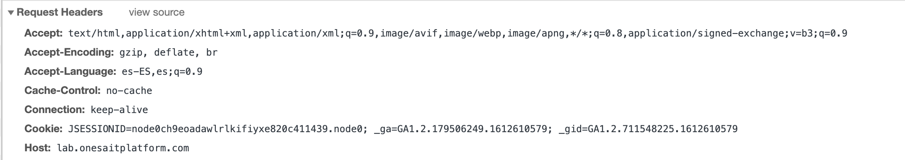 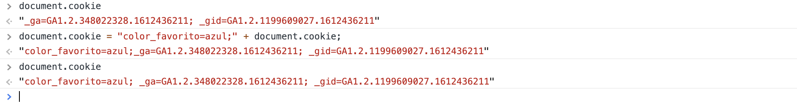Web Storage
- Cada Web Site tiene su propio Web Storage aislado, no podiendo acceder al de otros dominios
- Almacenamiento de datos simplres: texto, númerico (objetos también pero con
JSON.stringify()) - LocalStorage: almacenamiento persiste tras cerrar el navegador
- SessionStorage: almacenamiento no persiste tras cerrar el navegador (sesión finaliza)
Web Storage
- Permiten almacenar entre 5MB y 10MB de información; incluyendo texto y multimedia.
- La información está almacenada en la computadora del cliente y NO es enviada en cada petición del servidor, a diferencia de las cookies.
- Utilizan un número mínimo de peticiones al servidor para reducir el tráfico de la red.
- Previenen pérdidas de información cuando se desconecta de la red.
- La información es guardada por domino web (incluye todas las páginas del dominio).
Web Storage: ejemplo
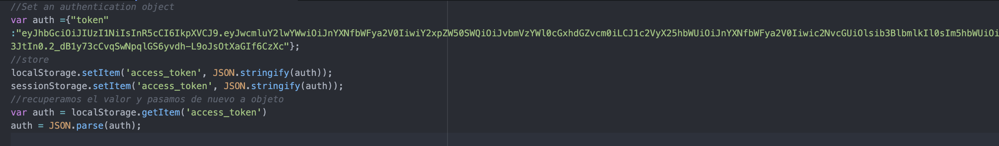Web Storage - Navegación Privada
La mayoría de los navegadores de hoy en día soportan una opción de privacidad llamada 'Modo incógnito', 'Navegación privada', o algo similar, que básicamente se asegura de que la sesión de navegación no deje rastros después de que el navegador se cierra.
La mayoría de los navegadores han optado por una estrategia donde las API de almacenamiento siguen disponibles y aparentemente completamente funcionales, con la única gran diferencia de que todos los datos almacenados son eliminados después de cerrar el navegador.
IndexedDB
- Sistema de base de datos completo embebido en el navegador
- Se utiliza para almacenar datos complejos y pesados como imágenes, vídeos...
- Su uso no es trivial
Ver ejemplo de clase y referencia
IndexedDB
- Interfaz disponible para almacenar los pares de objetos Request Response
- Tantas cachés como queramos, por nombre
- Tenemos que implementar la lógica a través de un ServiceWorker del navegador
Ver ejemplo de clase y referencia
HTML5 APIs
En la especificación HTML5 se introducen numerosas APIs de las cuales destacamos las más interesantes:
- Drag and Drop
- Geolocalización
- Web Storage: Indexed DB & Local Storage
- Web Workers: scripts en segundo plano
- Canvas
- Bluetooth
- Camera
Formularios Web
- Estructura de un formulario web
- Ajax
- API Fetch
- Await/Async
Estructura de un formulario web
<form>: es el bloque que define y agrega todos los elementos del formulario<fieldset>bloque que agrupa elementos del formulario con el mismo propósito<legend>da un siginificado a una agrupación <fieldset>
Estructura de un formulario web
<label>define una etiqueta para un control del formulario. Relación a través del atributofor<input>controles del Formulario (inputs): text, password, email, date, checkbox, hidden...
Ejemplo de formulario web básico
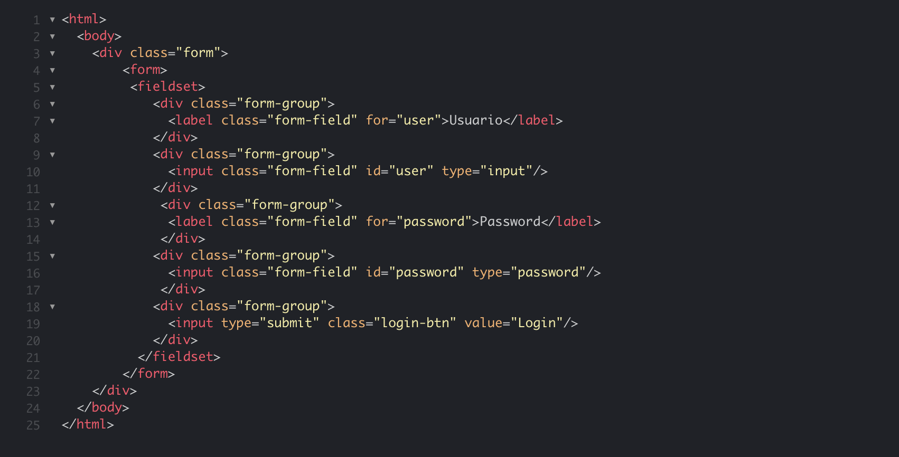Validación de formularios
Antes de enviar datos al servidor, es importante asegurarse de que se completan todos los controles de formulario requeridos, y en el formato correcto. Esto se denomina validación de formulario en el lado del cliente y ayuda a garantizar que los datos que se envían coinciden con los requisitos establecidos en los diversos controles de formulario.
Validación de formularios
La validación en el lado del cliente es una verificación inicial y una característica importante para garantizar una buena experiencia de usuario; mediante la detección de datos no válidos en el lado del cliente, el usuario puede corregirlos de inmediato. Si el servidor lo recibe y, a continuación, lo rechaza; se produce un retraso considerable en la comunicación entre el servidor y el cliente que insta al usuario a corregir sus datos.
Validación de formularios
Sin embargo, ¡la validación en el lado del cliente no debe considerarse una medida de seguridad exhaustiva! Las aplicaciones siempre deben realizar comprobaciones de seguridad de los datos enviados por el formulario en el lado del servidor, así como también en el lado del cliente, porque la validación en el lado del cliente es demasiado fácil de evitar, por lo que los usuarios malintencionados pueden enviar fácilmente datos incorrectos a tu servidor.
Validación de formularios - Premisas
- Obtener los datos correctos en el formato correcto. Nuestras aplicaciones no funcionarán correctamente si los datos de nuestros usuarios se almacenan en el formato incorrecto.
- Proteger los datos de nuestros usuarios. Obligar a nuestros usuarios a introducir contraseñas seguras facilita proteger la información de su cuenta.
- Queremos protegernos a nosotros mismo. Hay muchas formas en que los usuarios maliciosos puedan usar mal los formularios desprotegidos.
Tipos de validación de formularios
- Validación HTML incorporada: mejor rendimiento, menos personalización.
- Validación JavaScript: peor rendimiento, mayor personalización
Validación HTML
Atributos de validación
requiredminlength,maxlengthmin,maxtypepattern
Ejemplo de validación HTML
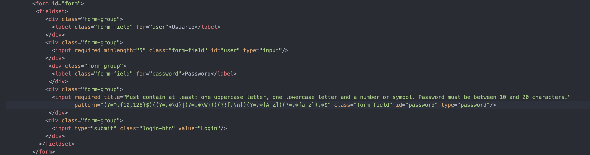 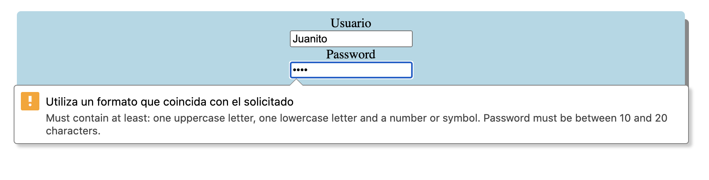Validación JavaScript
API de validación de restricciones
- Disponible para elementos: input, select, textarea, output, fieldset
- Se utilizan los mismos atributos de validación: required, type, pattern...
- Estos elementos obtienen los atributos
validity (ValidityState), validationMessage, willValidate - Permite utilizar los métodos
checkValidity()ysetCustomValidity(string)
Ejemplo validación JavaScript
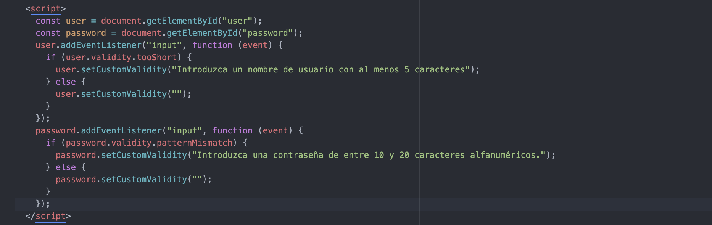Envío de formularios
- Destino del formulario (URL): atributo
action - Tipo de envío (método HTTP): atributo
methodcon valorGET / POST - Atributo
enctypepara enviar el contenido con diferente codificación, por ejemplomultipart/form-datapara imágenes
Ejemplo de formulario de login
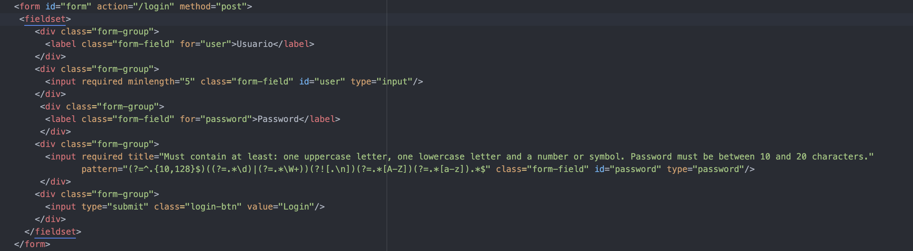Ejemplo de formulario con imagen
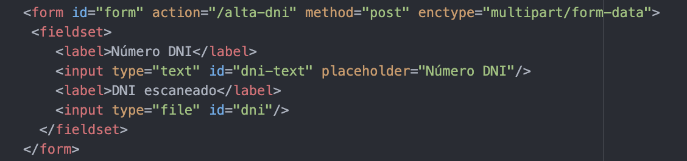Envío de formulario con JavaScript
Es posible enviar un formulario con JavaScript. Tan solo debemos hacer uso de la función JavaScript nativa submit() sobre el formulario
Asynchronous JavaScript (AJAX)
AJAX nos permite realizar llamadas HTTP con JavaScript de manera asíncrona (no bloqueante) en segundo plano, aunque también se puede usar de manera síncrona.
Se suele usar para recargar elementos del DOM que contienen datos de servidores externos, mandar y actualizar datos...
API Fetch
La API Fetch proporciona una interfaz JavaScript para acceder y manipular partes del canal HTTP, tales como peticiones y respuestas. También provee un método global fetch() que proporciona una forma fácil y lógica de obtener recursos de forma asíncrona por la red.
API Fetch
Este tipo de funcionalidad se conseguía previamente haciendo uso de XMLHttpRequest. Fetch proporciona una alternativa mejor que puede ser empleada fácilmente por otras tecnologías como Service Workers. Fetch también aporta un único lugar lógico en el que definir otros conceptos relacionados con HTTP como CORS y extensiones para HTTP.
API Fetch vs JQuery.ajax()
- El objeto Promise devuelto desde fetch() no será rechazado con un estado de error HTTP incluso si la respuesta es un error HTTP 404 o 500. En cambio, este se resolverá normalmente (con un estado ok configurado a false), y este solo sera rechazado ante un fallo de red o si algo impidió completar la solicitud.
- Por defecto, fetch no enviará ni recibirá cookies del servidor, para mandar cookiesdeberan ser configuradas.
Función Fetch
- Acepta dos parámetros: la URL del recurso y un objeto
Requestdonde se indican: método HTTP, cabeceras HTTP, body... - Devuelve una
Promisea la que podemos suscribirnos con.then()para procesar la respuesta en forma de objetoResponse - La respuesta se puede resolver para extraer el contenido utilizando el
mixindel objetoBodyde la respuesta
Ejemplo Fetch GET
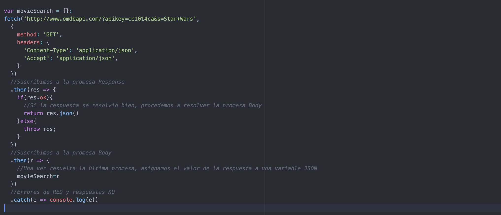Ejemplo Fetch POST
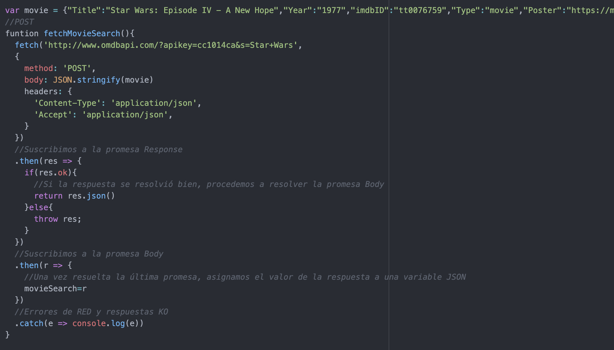Ejemplo Fetch POST formulario multipart
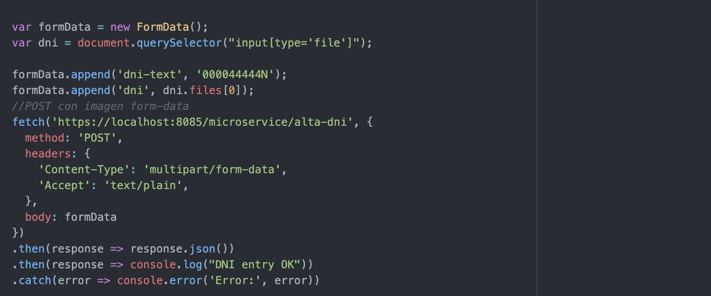Async/Await
Async/Await es una propuesta para extender la sintaxis de javaScript con las palabras reservadas async y await, cuyo uso permite tratar las funciones que devuelven promesas en nuestro código como si fueran funciones síncronas que devuelven directamente valores en vez de promesas.
Referencias
Sesión 1:
- https://www.ecma-international.org/publications/standards/Ecma-262.htm
- https://developer.mozilla.org/en-US/docs/Web/JavaScript/Guide
- https://www.oreilly.com/library/view/javascript-the-definitive/9781491952016/
- https://eloquentjavascript.net/
- https://js.do/
Referencias
Sesión 2:
- https://jsfiddle.net/
- https://developer.mozilla.org/es/docs/DOM
- https://lenguajejs.com/javascript/dom/que-es/
- https://developer.mozilla.org/es/docs/Learn/JavaScript/Client-side_web_APIs/Client-side_storage
- https://developer.mozilla.org/en-US/docs/Web/Events#standard_events
- https://developer.mozilla.org/es/docs/Learn/HTML
- https://www.digitallearning.es/blog/javascript-api-html5/
- https://developer.mozilla.org/en-US/docs/Web/Guide/AJAX/Getting_Started
- https://developer.mozilla.org/es/docs/Web/API/Fetch_API/Utilizando_Fetch